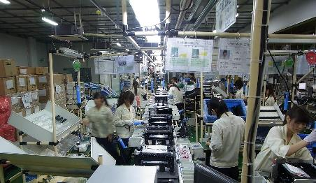
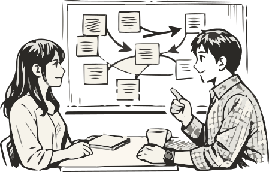
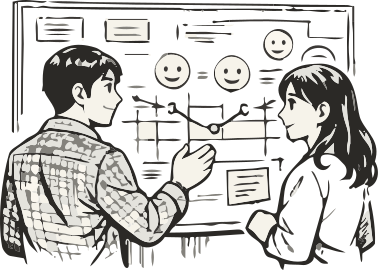

Selected Work — 01
新規事業・DX検討を
Advisory としてリード
多くの依頼は、何が課題かも誰がユーザーかも分からない状態で来る。だから最初にやるのは、「なぜこれをやるのか」をお互いに分かるまで可視化すること。そこから調査・設計・検証・提案まで、経営層と並走する。
Case — 住宅メンテナンス会社
仕事が単発で終わる会社の、強みを探す。
相談の始まりは、「仕事がどうしても単発で終わる」という困りごとだった。そこで、顧客がなぜこの会社に連絡し、施工のあとどう暮らしているのかを調べた。
分かったのは2つ。施工した箇所以外にも、家の困りごとは時々起きていること。そしてこの会社は、一度は個人の家に入れてもらえていること。「この強みを、続く関係にするには」と考えると、検討の軸が、家の相談をいつでもできるサブスク型サービスへ移った。太陽光、エアコン、ガスコンロ、外構。普通なら別々に頼むものを1か所で受け、常につながっている関係をつくる。自社で抱える施工スタッフが、そのまま相談の窓口になる。
その後この会社は、既存顧客の数を強みにした事業を考える方向へ切り替え、いくつもの仕掛けを始めている。
Output Sample
カスタマージャーニーマップ
その検討で使ったマップ。保証満了が近い年金生活の夫婦を最優先セグメントとして、7フェーズの行動・感情・接点を可視化した。
ジャーニーマップを見る ↗What Changed
入る前と後で、何が変わったか。
- スタート地点の「問い直し」 「システムを作りたい」という依頼が「顧客体験を作り直したい」という問いに変わり、プロジェクトの範囲と優先度が変わった。
- 現場観察で見えたこと 社内ヒアリングでは「不満なし」と言われていた業務プロセスに、現場観察で暗黙の非効率が複数見つかり、DX施策の優先順位が入れ替わった。
- PoC から外販展開へ 社内課題の解決を目的としたPoCが、外販ビジネスの種として認められ、新規事業提案へと発展した（詳細は Selected Work 02）。
ここから下では、こうした検討をどう進めているかを書いている。
Philosophy
「新しいアプリを作りたい」の後ろにある問いを探す。
新規事業やDXの検討が行き詰まるとき、立てた問いがずれていることがよくある。「新しいサービスを作りたい」という依頼の背後に、「既存事業の限界を突破したい」という本音があることも珍しくない。
アドバイザリーの仕事は、クライアントが自分たちで答えを見つけられるように、「問いの構造」を一緒に作ることだと考えている。問いが定まると、解の候補も見えてくる。
ここでいう「問い」とは、プロジェクトの向かう方向を決める一番上の命題のことだ。たとえば、クライアントが「新しいアプリを作りたい」と言ってきたとき、その背後にある問いは「なぜ顧客は2回目を使わないのか？」かもしれない。「アプリを作る」に答えるとアプリができる。「2回目を使わない理由」に答えると、体験の作り直しが始まる。同じ予算でも、どの問いに答えるかで成果が変わる。

Approach
まず「なぜこれをやるのか」を、お互いに分かるまで。
多くの依頼は、実は何が課題か分かっていない、誰がユーザーなのか分かっていない、だが何か新しいことをしないといけない、という状況で来る。この状態で闇雲にシステムやサービスを企画しても、成功率は低い。
だから最初にやるのは、土台の可視化だ。なぜ新しい取り組みが必要なのか。その企業はどこで強みを発揮しているのか。新しいサービスは既存顧客を対象にするのか、まったくの新規顧客を狙うのか、その中間なのか。ここをヒアリングと観察と議論を重ねて、絵にしていく。お互いに「なぜこれをやるのか」を理解してから進めることが、この仕事では一番大事だと思っている。
土台ができてから、狙うユーザーの課題やニーズを調べていく。この段階で使う道具が、次の２つ。ひとつは Amazon が実践する Working Backwards——「完成した姿から逆算する」思考法。もうひとつは、デザイナーとして現場で培ってきたデザイン思考——ユーザーの実態から課題を発見する観察ベースのアプローチだ。
Working Backwards
製品が完成したと仮定して、顧客向けのプレスリリースとFAQを先に書く。「何を届けたいか」を技術や予算の制約なしに言語化し、厳しい問いに先回りして答えることでコンセプトの穴を早く見つける。この文書が合意されて初めて、開発・設計が始まる。
Design Thinking
答えを考える前に、観察に時間をかける。現場に入り込んで行動を見て、言葉の背後にある動機をインタビューで掘る。ユーザーが「困っている」と言わない所に、解くべき課題が隠れていることが多い。デザイナーとして約30年、この感覚を現場で磨いてきた。
Process — Overview
発見から提案まで、一気通貫で伴走する。
7つのステップで構成されるが、行き来しながら進む。特に「問いの設定」と「課題の発見」は、調査の結果を受けて何度でも問い直す。
目指す方向の土台が共通認識として確立されてから、実際のユーザーの課題やニーズを調べていく。現場には、事前に幾つかの仮説を持って行けるように調べておく。
たとえば印刷会社なら、次々に流れてくる印刷物のジョブをこんなふうに処理しているのではないか。表紙と本文が別々の印刷機で刷られるから、こんなことが起こるのではないか。そう想像しておいて、実際の現場でそれらの仮説がどうなっているかを確かめていく。仮説は外れてもよい。その中で、本当に彼らが困っていることは何かを見つけていく。
Process — In Detail
各ステップで何をするか、なぜそれが重要かを詳しく説明する。
-
01
問いの設定 — What to solve? 依頼された課題を、まず問い直す。Working Backwards のフレームで「理想の未来像」を先に言葉にし、解くべき問いを経営層と合意する。この段階の質が、その後のプロジェクトを左右する。
-
02
観察・調査 — Ethnography & Interview 現場に足を運び、ユーザーの行動を観察するエスノグラフィーと、行動の背景にある動機や判断基準を探るインタビューを組み合わせる。「なぜそうしているか」を聞き続けて、表に出ているニーズの背後にある課題を掘り起こす。
-
03

課題の発見・構造化 — Insight 調査で得た断片的な観察をパターンにまとめ、「だから、こうするとよい」というインサイトにする。課題を構造で捉えることで、複数の施策を束ねた一貫した戦略の下地を作る。 -
04

カスタマージャーニー設計 — Journey Map ユーザーの体験を時系列と感情の変化で可視化する。タッチポイントごとの課題と機会を洗い出し、どこにどんな介入が必要かをクライアントと合意する。戦略を、実感できる体験の設計に落とし込む。 -
05
ソリューション設計 — Solution ジャーニーマップを起点に、解決策の方向性を絞り込む。「誰が・いつ・なぜ使うか」という文脈も含めて要件にする。開発チームへの橋渡しまでを視野に入れた精度で仕上げる。
-
06
プロトタイピング・PoC 作ってみて初めて見える課題がある。低コストで試し、早く失敗し、学びを次の設計に反映する。PoC の設計から実行、評価まで関わる。
-
07
事業提案 — Proposal 検証された仮説を、経営判断に足りる事業計画に仕上げる。市場規模・収益モデル・ロードマップ・リスク評価を含むデッキを作成し、意思決定者へのプレゼンテーションまで伴走する。
Field Research
現場に出る。海外にも。
リサーチは机の上で完結しない。これは今のアドバイザリーより前、精密機器メーカーの新規事業部門にいた頃の話だが、2017年、パリ・トゥールーズへの現地視察では、Airbus・Nokia をはじめとする欧州企業のイノベーション組織・活動を直接調査した。組織がいかに「探索」と「深化」を両立させているか、その構造と文化を現地で観察することで、日本企業への提言に厚みを加えた。
What Makes It Different
デザイナーが、経営の言語を話す。
約30年のデザインキャリアで磨いた「人を観る目」と、IT・クラウド企業での実務で身につけた「事業の言葉」。この二つを一人の中に持っていることが、このアドバイザリーの特徴だと思っている。ユーザーの感情を語りながら、同時にビジネスモデルとROIも語れる。経営層とデザインチームが同じ場所で話すには、両方の言葉が要る。